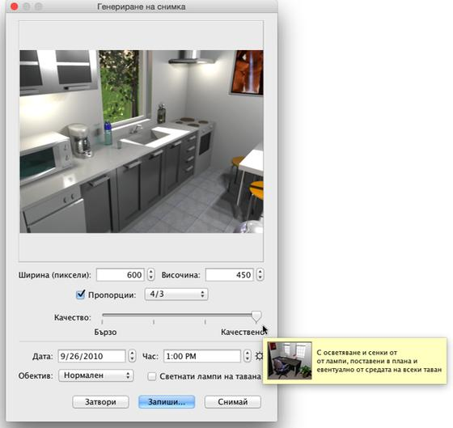
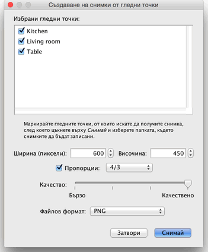

| Създаване на снимки | |||
|
За да създадете 3D изображение на Вашия дом, изберете от менюто 3D изглед > Направи снимка... или цъкнете върху инструмента, който Снима 3D изгледа от лентата с инструменти.
Ще се появи следния прозорец, изобразяващ размера, качеството и някои други настройки, използвани за генерирането на изображението, заедно с бутоните Снимай, стартиращ генерирането и Запиши..., за запис на изобразеното готово изображение.  Ако искате, можете да промените размерите по подразбиране на изображението и да изберете други широчина и височина. Когато Пропорции е маркирано, височината на изображението ще се изчислява автоматично при всяка смяна на ширината, така че да съответства на зададената в съседното поле пропорция. Плъзгачът Качество Ви позволява да избирате измежду четири различни нива на качество и бързина на генериране на изображението, от лошо и най-бързо до най-добро, но най-бавно, в зависимост от това, което Ви е нужно за момента. |
|
|||||||||||||


|
В последните две нива, полученото изображение силно зависи от разположението и яркостта на източниците на светлина. По подразбиране, изображението се изчислява с положение на слънцето по обяд и с източници на светлина, автоматично поставени в центъра на тавана на всяка стая. Ако искате да контролирате по-добре осветлението, пробвайте като демаркирате Светнати лампи на тавана, като добавите в плана обекти от групата Осветление и като регулирате яркостта им чрез техния регулатор на мощността или чрез редактиране на техните характеристики. Яркостта на слънцето, цвета и посоката на лъчите му зависят от часа на зададената дата, от разположението спрямо посоката Север, географските координати и часовата зона, като тези параметри се настройват от прозореца за настройка Свойства на компаса.... Яркостта на изображението зависи също от нивото, зададено от плъзгача Яркост на осветлението в прозореца Настройки на 3D изгледа. И накрая, в прозореца Създаване на снимка имате възможност да избирате измежду следните четири вида обективи на виртуалния фотоапарат:
Ако искате да създавате наведнъж група от по няколко снимки, запазете интересните за Вас гледни точки като използвате менюто 3D изглед > Запис на гледната точка..., след което изберете от менюто 3D изглед > Направи снимки от гледните точки.... Ще се покаже прозорец, в който ще можете да изберете размера, качеството и файловия формат на снимките, преди те да бъдат генерирани и записани в избраната от Вас папка. В двете най-високи нива на качество, датата, часът и обективите, използвани в отделните гледни точки ще са тези, които сте задали в прозореца Създаване на снимка, в момента, когато сте записали тази гледна точка.  |


|